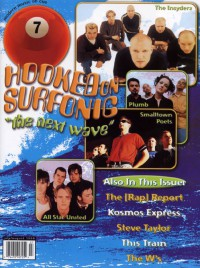

CMnexus
: Contemporary Christian culture, music, and media.
|
|
7ball, Jul / Aug 1998, #19
| Cover |
|---|
|  | | Writers in this Issue |
|---|
Bonham, Chad
Brooks, Thompson
Caviness, Brad
Feinberg, Margaret
Keyes, J. Edward
MacIntosh, Dan
Newcomb, Brian Quincy
Short, Chris M.
Walker, Derek
Well, Chris
Wilstermann, Dale
|
Surfonic Water RevivalCover Feature:
- "Surf's Up" by Dan MacIntosh
- "Terry Taylor Rides A New Wave" by J. Edward Keyes
Article:
- "The {Rap} Report" by Chad Bonham
- Steve Taylor, Squint Entertainment by Brad Caviness
- "Throw it Against the Wall..." by J. Edward Keyes
- "Party On With This Train" by Thompson Brooks
- "Bridging The Gap" by Derek Walker
Bankshots:History:Album Review:Gadget Watch:blah, blah, blah: "No Such Thing" by Chris Well
This issue of 7ball came bundled with GAS #8. |
|